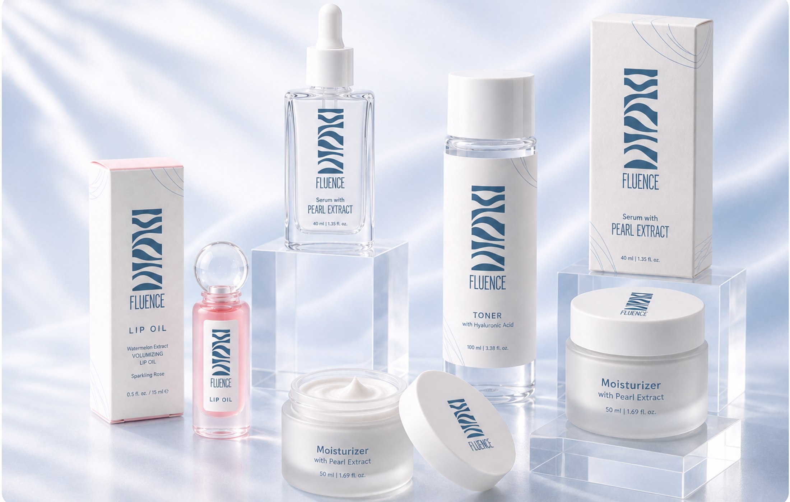
FLUENCE
HYDERATION. RADIENCE. REVITALIZATION
Fluence is a water-based skincare brand concept created around the idea that effective skincare should feel fresh, accessible, and uncomplicated.
The project explored how a skincare identity could communicate hydration and purity while still feeling contemporary, approachable, and affordable.
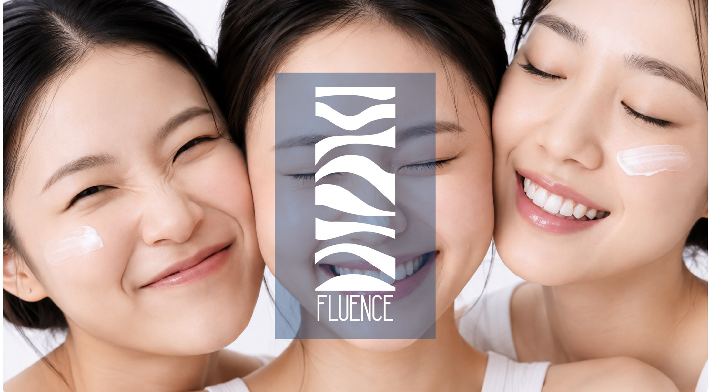
How can skincare feel premium without feeling inaccessible?
Skincare branding often leans heavily towards either clinical functionality or luxury aesthetics. Fluence was developed as an exploration of the space between the two.
The challenge was to create an identity that could communicate efficacy and trust while still feeling fresh, youthful, and approachable.
The brand needed to feel:
Pure. Hydrating. Transparent. Affordable.
Rather than making skincare feel complicated, Fluence was designed around the idea of making everyday skincare feel simple and refreshing.
THE OUTCOME
Turning hydration into a visual language.
Fluence became a complete visual identity built around water, movement, and fluidity.
The identity uses flowing wave forms, a cool blue palette, elongated typography, and minimal layouts to create a system that feels clean without becoming overly clinical.
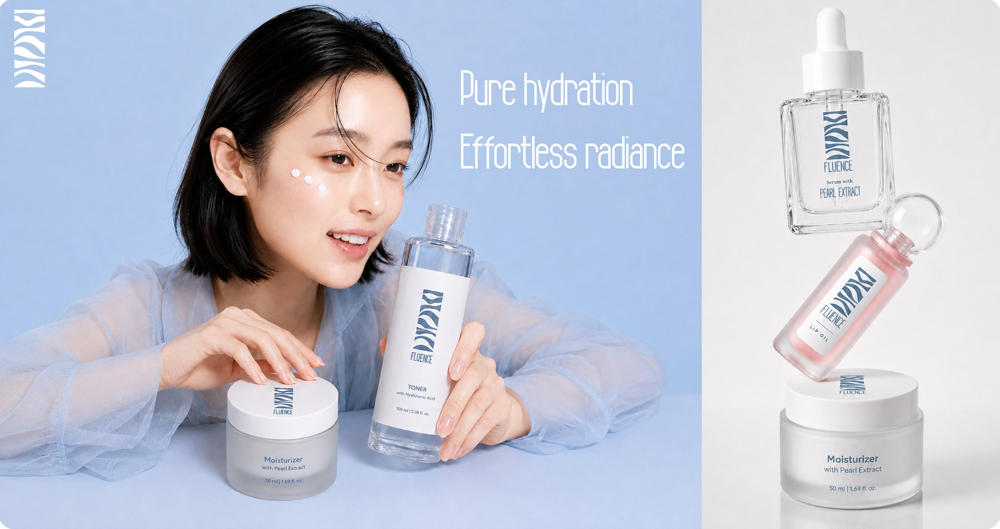
WHY THE NAME FLUENCE?
The name Fluence was chosen as the foundation of the identity.
Its sound and structure naturally lend themselves to ideas of flow, influence, fluidity, and movement, making it appropriate for a water-based skincare concept.
The visual identity then builds on this idea through flowing forms and wave-inspired graphics.
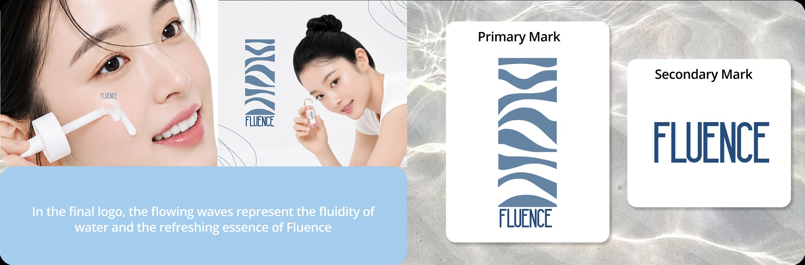
What could hydration look like?
Water in motion.
I explored different typographic directions, letterforms, compositions and symbols before moving towards a more distinctive wave-based mark.
The final identity combines a structured wordmark with flowing forms, creating a contrast between order and movement.
The mark needed to work beyond just the logo itself, it had to become a visual asset that could live on bottles, boxes, posters and digital interfaces.
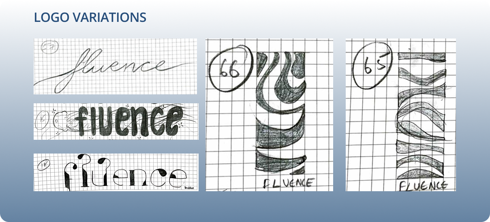
One visual language, many touchpoints.
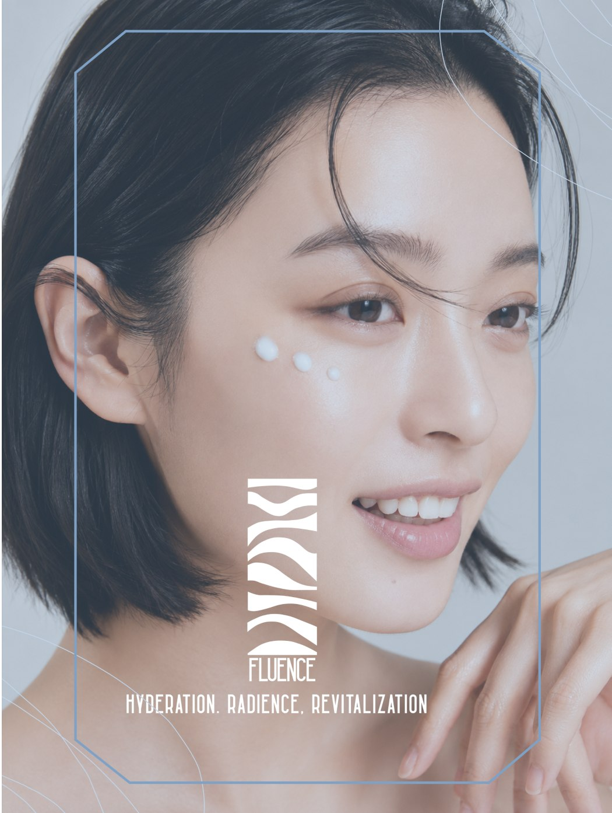
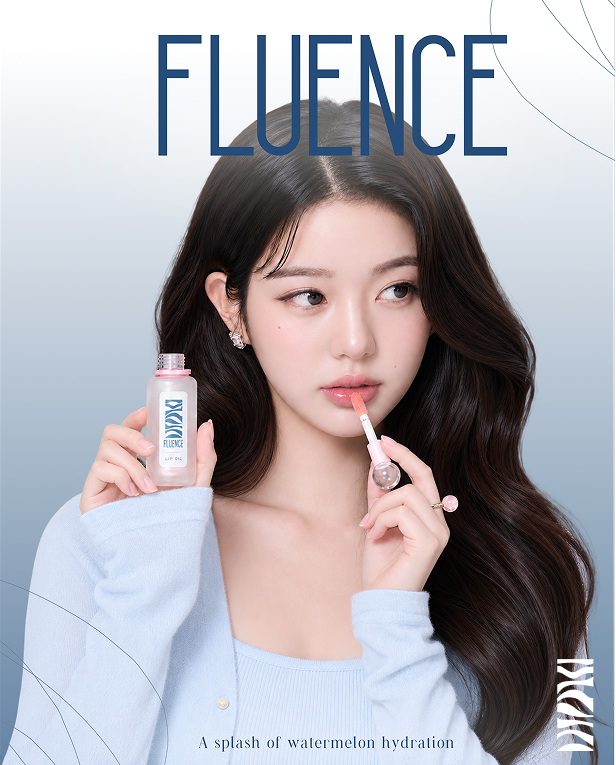
Once the logo was established, the next challenge was building a system around it.
The wave became more than a logo element, it became a graphic language.
It could be enlarged, cropped, repeated, used as a background element, or integrated into packaging while still remaining recognizable as Fluence.
This helped the identity stay consistent across different formats without making every application look identical.
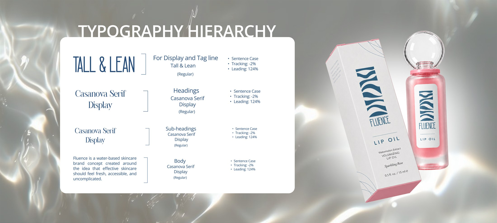
I chose to use a tall and narrow sans-serif to give the identity a clean and contemporary character, while a serif typeface introduced a softer and more refined contrast.
COLOR PALLET
Building a palette around water.
The color palette draws from the visual qualities associated with water, freshness and clarity.
Cool blues form the foundation of the identity, supported by soft neutrals that give the system breathing space.
The palette was designed to make Fluence feel refreshing without relying on the stereotypical clinical white-and-blue skincare aesthetic.
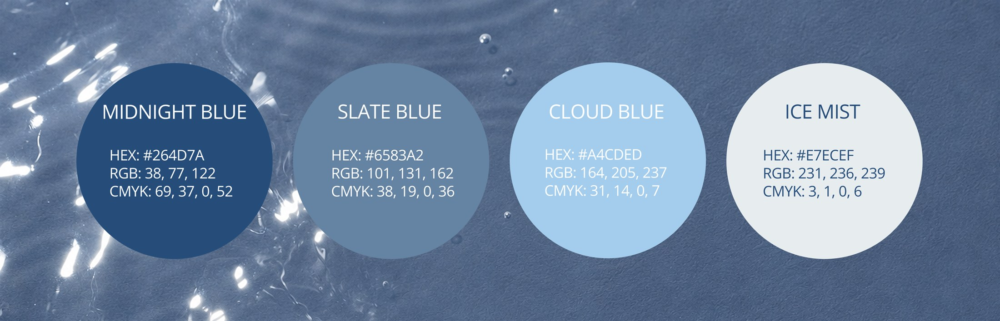
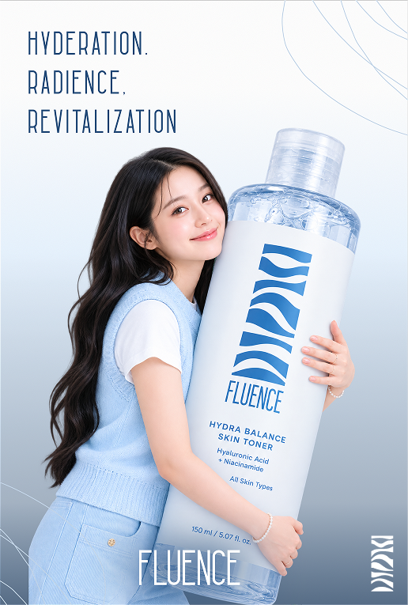
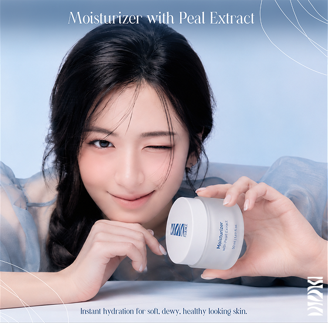
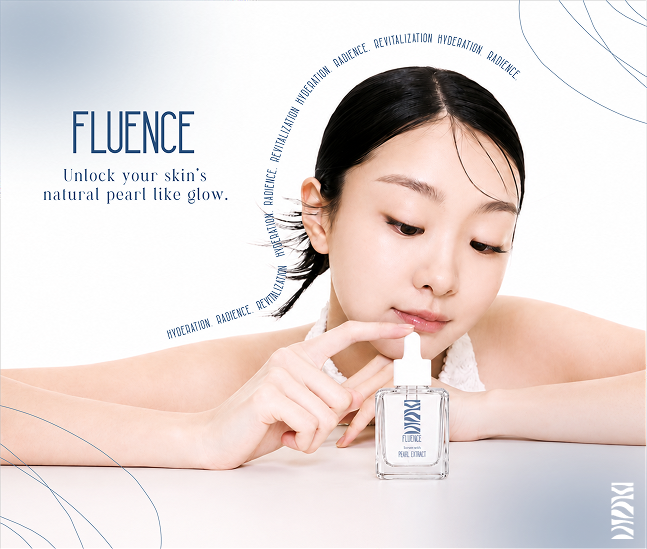
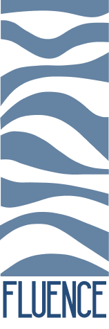
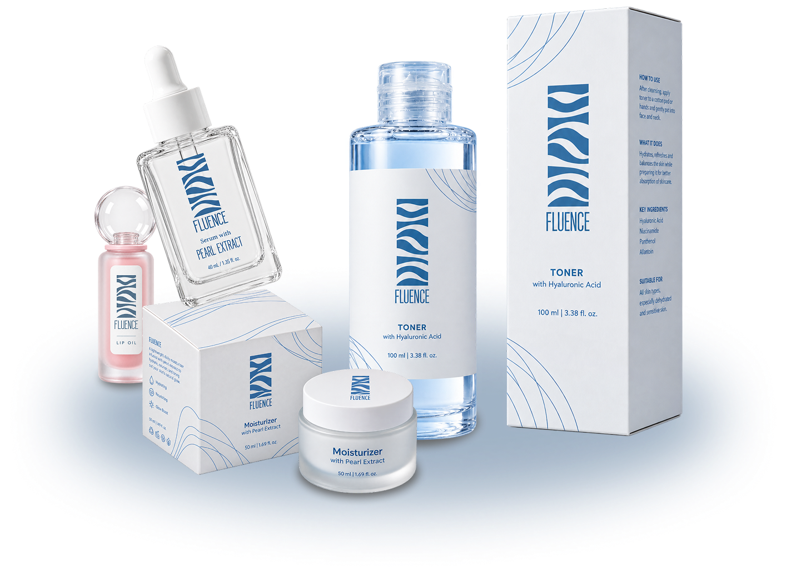
HYDERATION. RADIENCE. REVITALIZATION